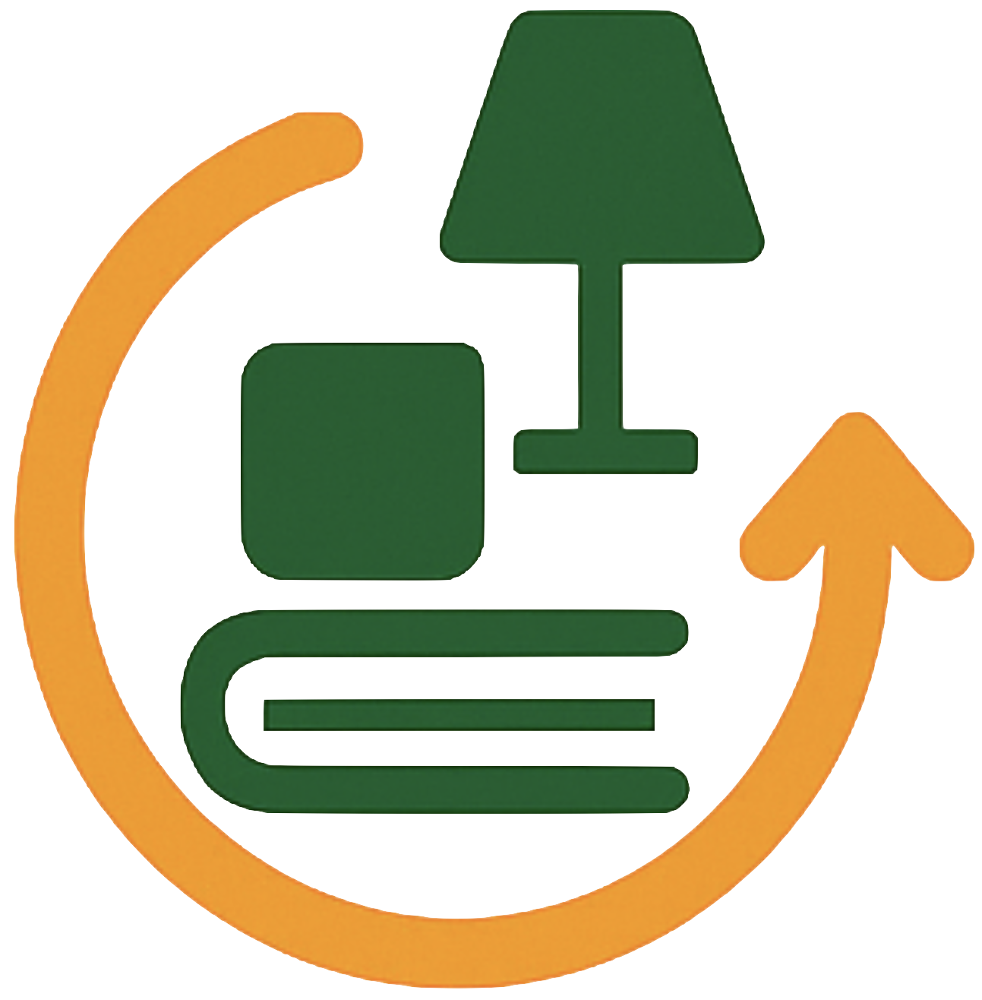
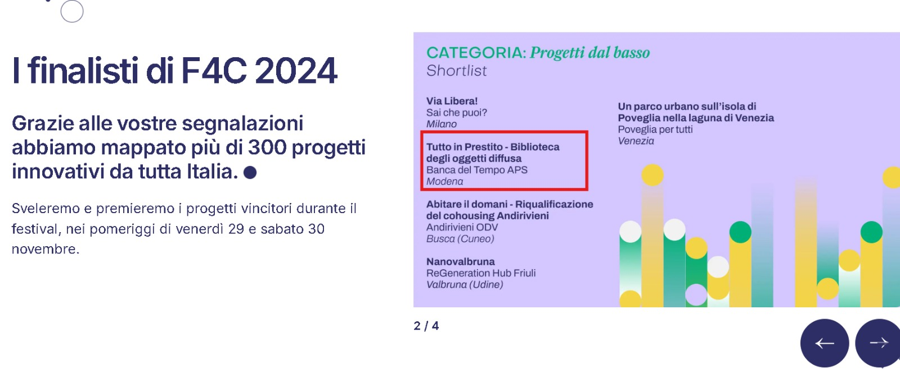

Presto Cose, Vedo Gente, allora denominato Tutto in Prestito, è stato selezionato nella shortlist del Premio Future4Cities 2024 e ha vinto uno dei bandi liberi per progetti legati alla sostenibilità della Fondazione di Modena nel 2025.
Nel 2024 il progetto è stato selezionato nella categoria Progetti dal basso del Premio Future4Cities.
